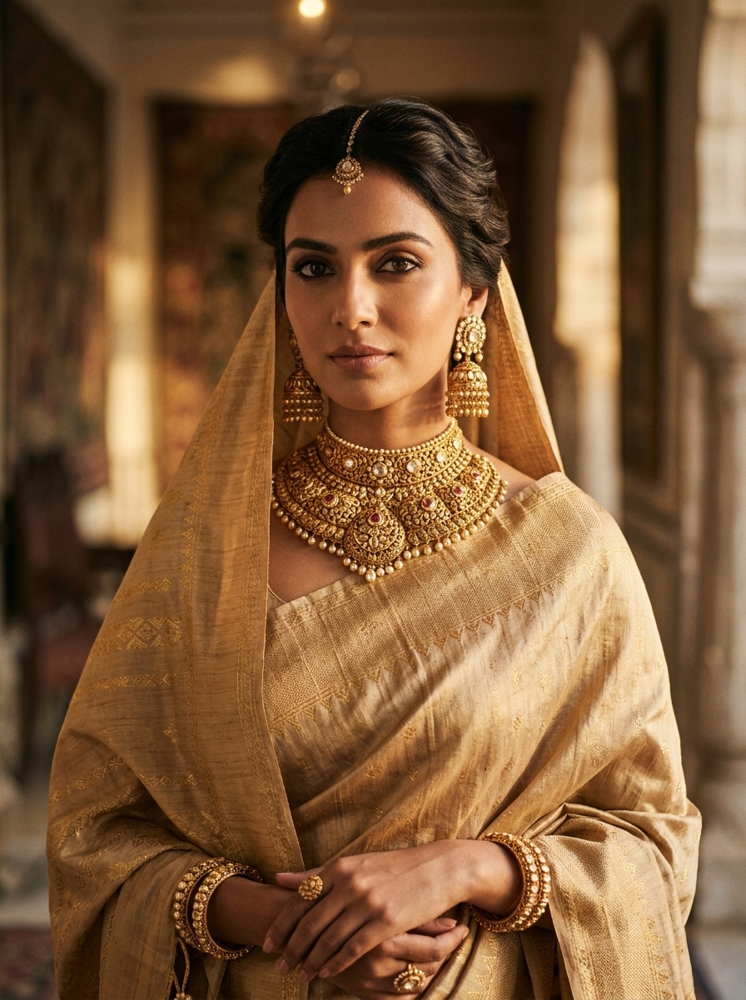
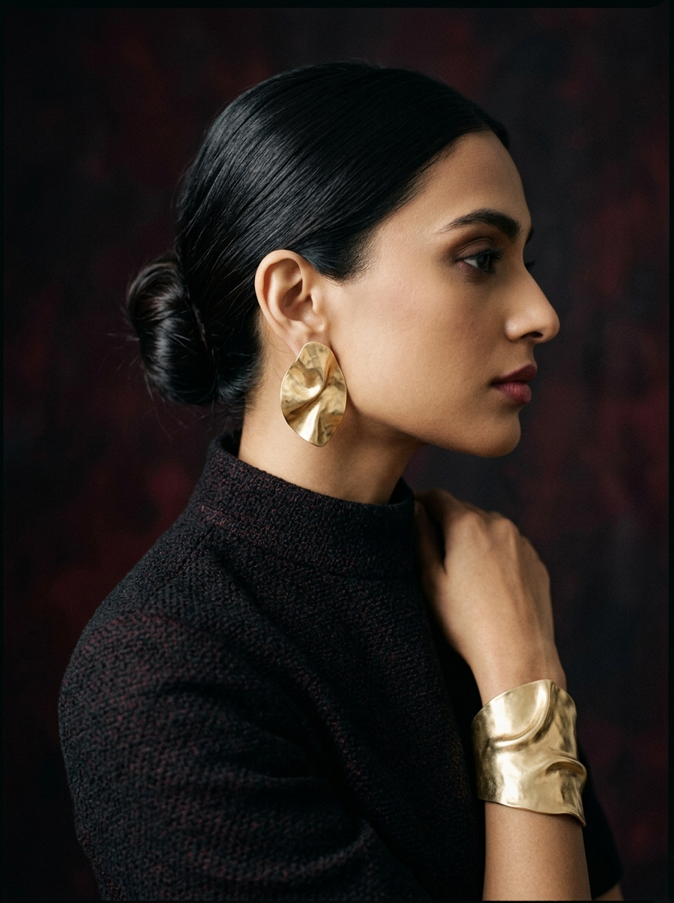
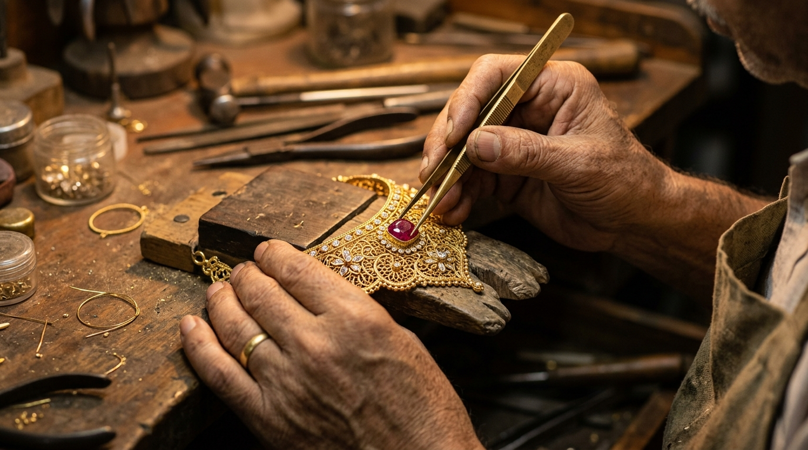
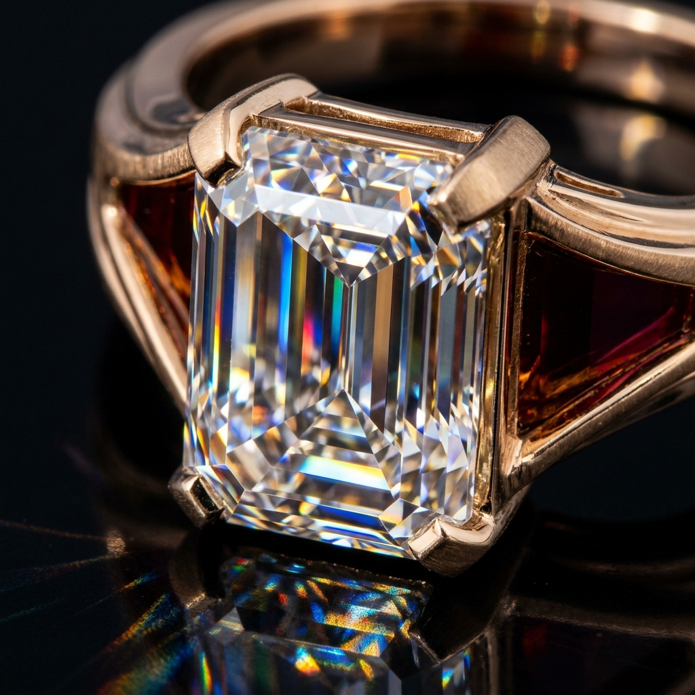
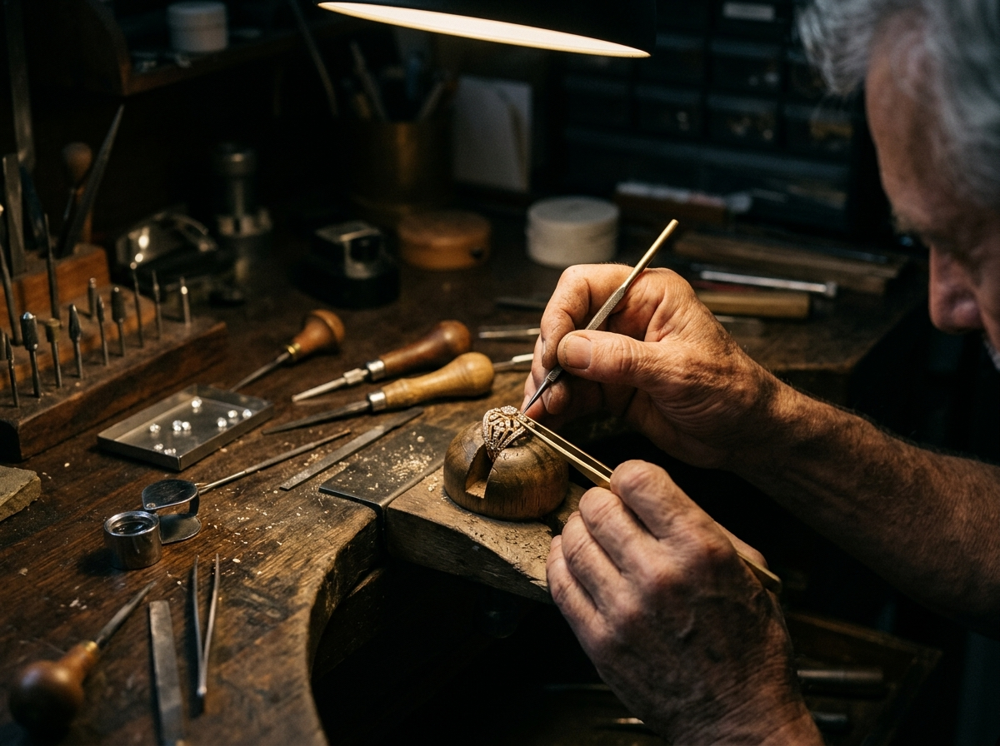
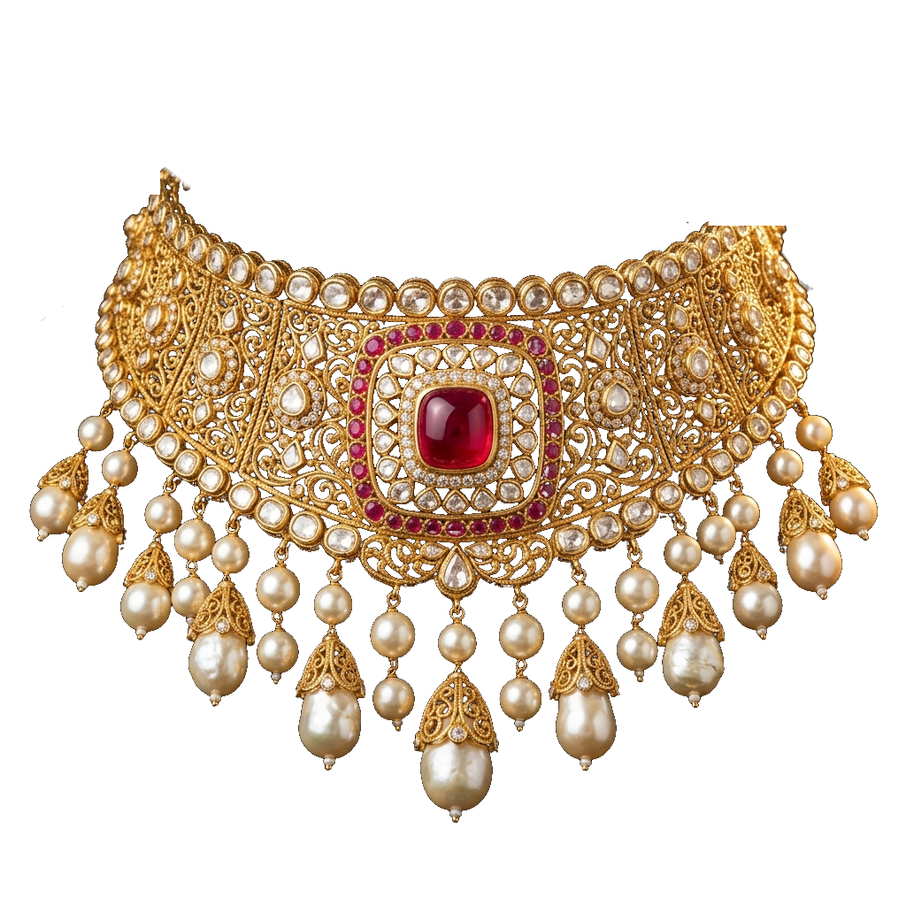
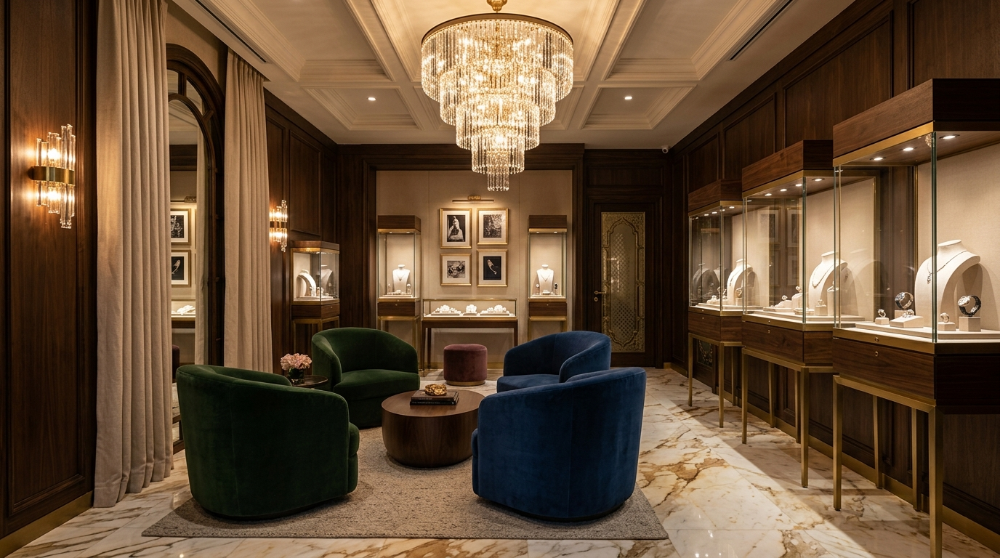

Timeless Expressions
of You.
Carrying forward over 40 years of unwavering trust from Guwahati. Exquisite Assamese royal creations shaped by hand and ancestral alchemy, crafted for your today and tomorrow.

BIS 916 HALLMARKED
Guaranteed certified purity, minted in sovereign Assamese gold formulations.
ETHICAL PROVENANCE
Natural untreated Burmese rubies, Basra seed pearls & conflict-free diamonds.
ANCESTRAL GOLDSMITHING
Four generations of Guwahati bench mastery inherited from L Gopal Jewellers.
LIFETIME ASSURANCE
Complimentary heirloom cleaning, tension adjustments & provenance custody.
MORE THAN JEWELLERY.
A STORY OF CULTURE, CRAFT & YOU.
Rooted in over 40 years of trusted goldsmithing under L Gopal Jewellers, Swarnaveda carries forward an ancestral lineage of Assamese royal metallurgy. Sourced from traditions inspired by the sacred Brahmaputra River, each piece is engineered as a wearable heirloom made to transcend generations.
“Heritage is not the preservation of ashes, but the transmission of an unquenchable flame.”
— The Founding Atelier, L Gopal Legacy
WHERE TRADITION
MEETS PERFECTION.
Every Swarnaveda piece is meticulously handcrafted by master artisans in Guwahati, preserving centuries-old techniques passed down through ancestral benches.

Ingot Smelting & Proprietary 22K Alloy
Historically inspired by alluvial gold panning in the Brahmaputra River, we blend pure 24K sovereign gold into a proprietary antique champagne formulation that glows with warm reliquary luster.

Hand-Punched Jaali & High-Relief Chasing
Master artisans apply steel chisels and microscopic agate burnishing tools against tree resin pitch beds, raising sacred Brahmaputra lotus flora in continuous dimensional relief.

Kundan & Polki Jadau Setting
Each uncut polki diamond and pigeon-blood Burmese ruby is nestled inside pure 24K gold foil bezels that are burnished cold with agate stones to create an unbroken hall of mirrors.
Kinetic Basra Seed Pearl Stringing
Descendants of royal court stringers thread natural Basra seed pearls onto hand-twisted silk cords, granting kinetic chime and weightless fluid drape against the collarbone.

A CULTURE THAT SHINES.
“Our creations are inspired by Assam's vibrant heritage — its morning river mists, golden woven muga silk, ancient Kamakhya sanctums, and the eternal light of the Brahmaputra.”
WHAT OUR PATRONS SAY
From high-society brides to international collectors, hear from those who cherish Swarnaveda heirlooms.
“An exquisite blend of tradition and modern elegance. My bridal necklace from Swarnaveda was everything I dreamed of — the weightless silk-like contour against the collarbone was breathtaking.”
“The craftsmanship is simply outstanding. Each piece feels like a living piece of Assamese history, elevated with contemporary precision. L Gopal Jewellers has truly outdone itself.”
“Timeless designs, exceptional purity, and an atelier experience that felt completely discreet and personalized. The ruby medallion choker will be an heirloom for my daughter.”

EXPERIENCE JEWELLERY
IN PERSON.
Step into our world of timeless elegance. Explore our royal creations in private comfort with bespoke guidance from our master gemmologists at our Guwahati flagship salon.